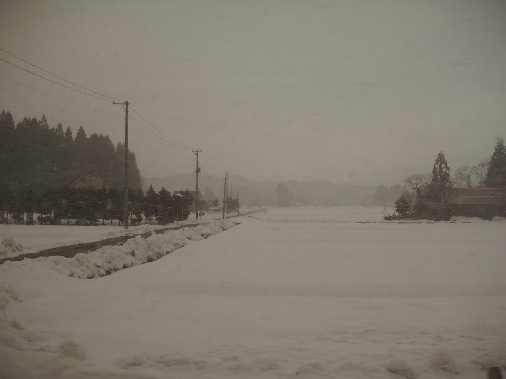
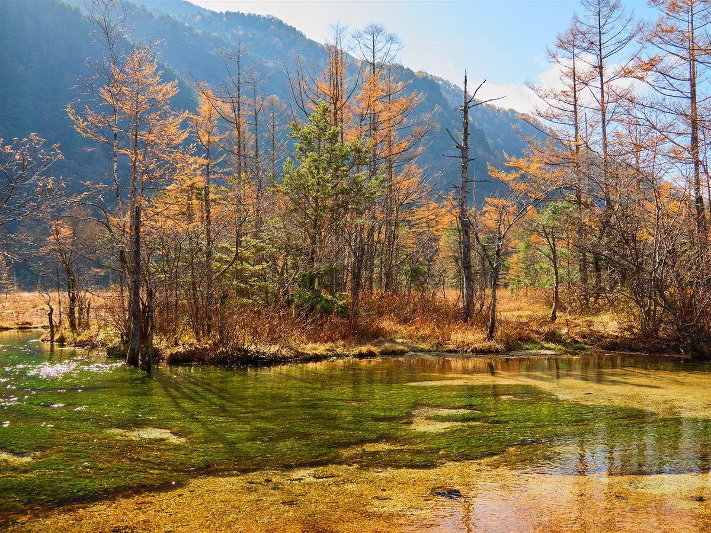
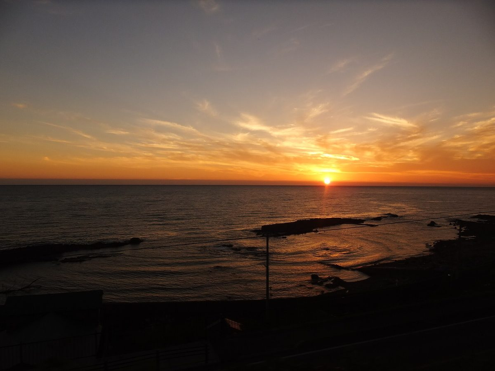

雪と紅葉のあいだの一杯
季節を思い浮かべながら
雪の季節と、紅葉の季節。そのあいだに一杯のコーヒーがあったら、と想像してみました。
ここでの写真と言葉は制作側の案で、他地域で撮影した写真を含むイメージです。


一杯の前に
一杯のコーヒーの前には、どんな時間があるのでしょう。
豆や焙煎などの詳細は準備中です。お問い合わせください。
SAMPLE(試作ページ)

雪と紅葉のあいだの一杯
雪の季節と、紅葉の季節。そのあいだに一杯のコーヒーがあったら、と想像してみました。
ここでの写真と言葉は制作側の案で、他地域で撮影した写真を含むイメージです。


一杯のコーヒーの前には、どんな時間があるのでしょう。
豆や焙煎などの詳細は準備中です。お問い合わせください。
掲載写真はフリー素材のイメージで、店舗の実際の様子ではありません。他地域で撮影された写真、撮影地が不明な写真を含みます。